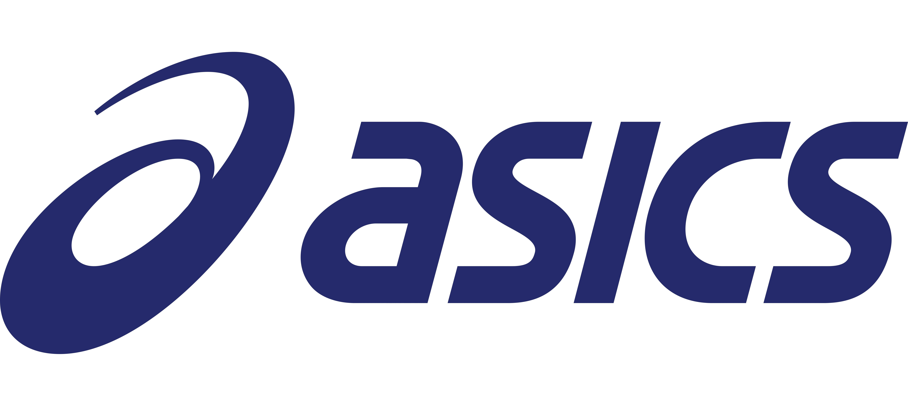
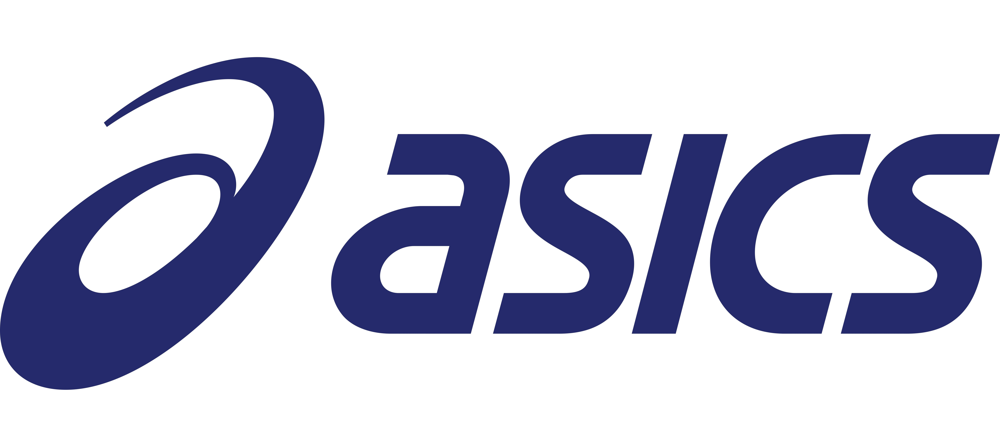
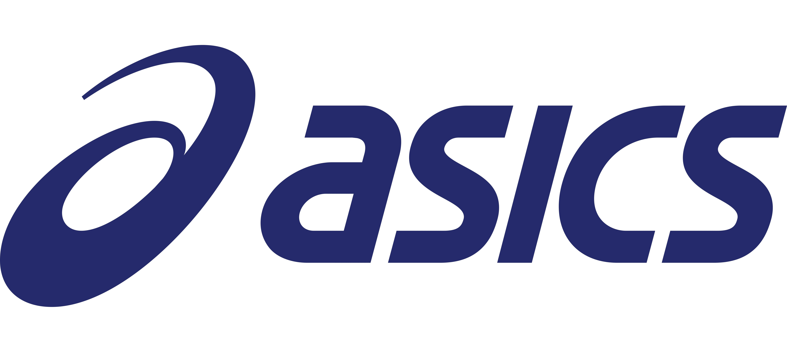
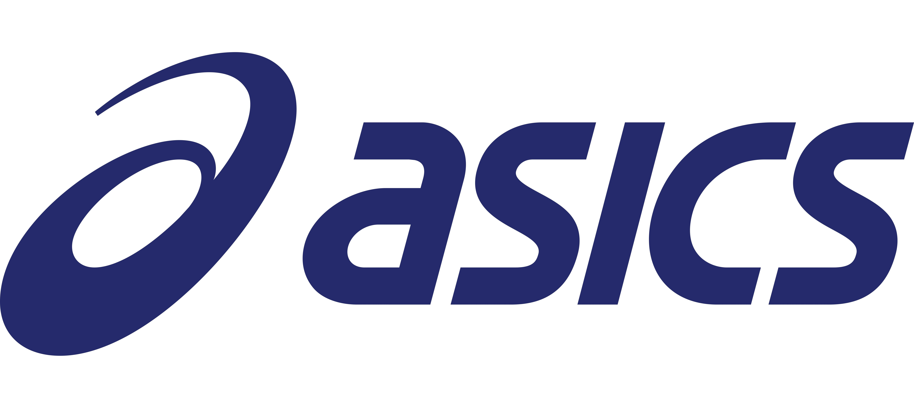

Discover the perfect ASICS running shoe for your journey. Whetherkfou're seeking max cushioning, reliable stability, or trail-ready performance, each shoe is expertly engineered with ASICS' industry-leading foam technology to support your unique stride and help you go further with confidence.